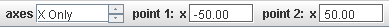

A calibration point pair track is similar to an offset origin except that it defines two points with fixed (settable) world coordinates. World coordinates may consist of an x-component, y-component or both. For a given coordinate system, these world coordinates uniquely determine the scale, origin, and/or angle at each step. When either of the calibration points is dragged in the main video view, the properties of the coordinate system are modified in order to maintain the assigned world coordinates. Calibration points are the easiest way to set coordinate system properties when two features with known world coordinates are visible in all video frames.
Note: Calibration points are very powerful. It is strongly recommended to "play" with some calibration points while both the axes and calibration stick are visible to see how they work together to control the coordinate system.
Click the arrow on the Calibration button on the toolbar and select New|Calibration Points to create a new calibration point pair. If desired, you can create more than one pair. Show or hide the calibration points (along with other calibration tools, if any) by clicking the main part of the Calibration button.

The calibration points are initially umarked and the toolbar indicates this status in red. Shift-click the video to mark the first point, then do the same for the second. The x- and y-components (world coordinates) of the newly marked points are displayed on the toolbar.


Once the calibration points are created and marked, you can re-mark them, change their world coordinates or move them to new image positions as described below.

The "Axes" spinner determines whether the calibration points control both x- and y-axes or only a single axis. When a single axis is selected (here "X Only"), moving a calibration point along that axis changes the scale and translates the origin without changing the angle. Moving a calibration point perpendicular to the selected axis has no effect. This is very useful when one axis is unknown or unimportant--for example, with vertical motion studies or optical spectrum analysis using a line profile track.
Select either calibration point and shift-click again to move it to a new location without changing the coordinate system.

Enter the desired values in the x and/or y fields on the toolbar to change the world coordinates of the selected calibration point.
Note: Changing the world coordinates changes the coordinate system scale, origin and/or angle so that the image positions of both points remain unchanged.
Select and drag or nudge either calibration point to a desired location in the main video view.
Note: Moving a calibration point changes the coordinate system scale, origin and/or angle so that the world coordinates of both points and the image position of the unselected point remain unchanged.
Locking the calibration points track prevents it from making any changes to the coordinate system. Lock the calibration points track by turning on the Locked property in its track menu.